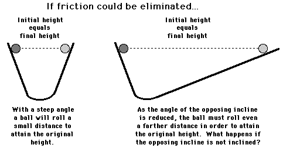

According to Newton, An object in motion tend to remain in motion and an object at rest tend to remain in rest. It is the natural tendency of objects to resist changes in their state of motion. This tendency to resist changes in their state of motion is described as
inertia.
Galileo, a premier scientist in the seventeenth century, developed the concept of inertia. Galileo reasoned that moving objects eventually stop because of a force called friction. In experiments using a pair of inclined planes facing each other, Galileo observed that a ball would roll down one plane and up the opposite plane to approximately the same height. If smoother planes were used, the ball would roll up the opposite plane even closer to the original height. Galileo reasoned that any difference between initial and final heights was due to the presence of friction. Galileo postulated that if friction could be entirely eliminated, then the ball would reach exactly the same height.
Galileo further observed that regardless of the angle at which the planes were oriented, the final height was almost always equal to the initial height. If the slope of the opposite incline were reduced, then the ball would roll a further distance in order to reach that original height.

Galileo's reasoning continued - if the opposite incline were elevated at nearly a 0-degree angle, then the ball would roll almost forever in an effort to reach the original height. And if the opposing incline was not even inclined at all (that is, if it were oriented along the horizontal), then ... an object in motion would continue in motion... .

Mass as a Measure of the Amount of Inertia
All objects resist changes in their state of motion. All objects have this tendency - they have inertia. But do some objects have more of a tendency to resist changes than others? Absolutely yes! The tendency of an object to resist changes in its state of motion varies with mass. Mass is that quantity that is solely dependent upon the inertia of an object. The more inertia that an object has, the more mass that it has. A more massive object has a greater tendency to resist changes in its state of motion.